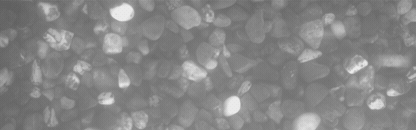
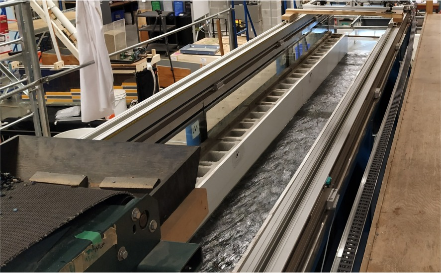
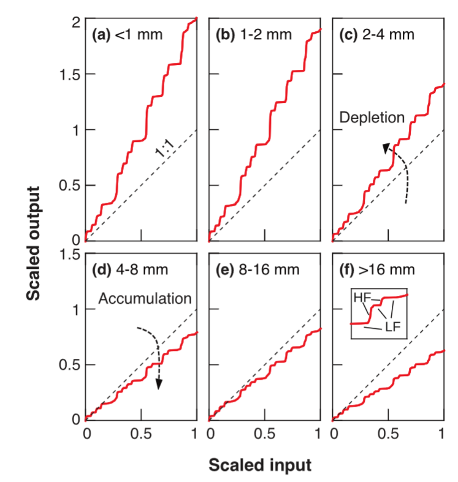
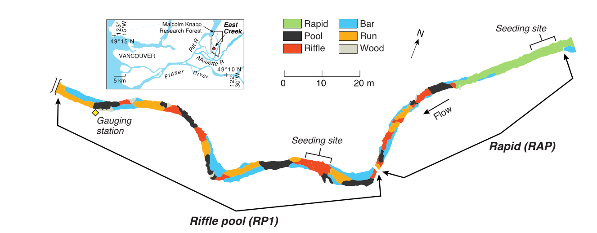

Sediment transport in rivers
Flume experiments and stochastic models of bedload sediment transport.
Stochastic description of bedload transport




- Pierce, J.K., Hassan, M.A., & Ferreira, R.M.L., Probabilistic description of bedload fluxes from the aggregate dynamics of individual grains, Earth Surface Dynamics 10 (4), 817–832, 2022.
- Pierce, J.K., An advection-diffusion process with proportional resetting. arXiv:2204.07215, 2022.
- Pierce, J.K. & Hassan, M.A., Joint stochastic bedload transport and bed elevation model: Variance regulation and power law rests, Journal of Geophysical Research: Earth Surface 125 (4), e2019JF005259, 2020.
- Pierce, J.K. & Hassan, M.A., Back to Einstein: Burial‐Induced Three‐Range Diffusion in Fluvial Sediment Transport, Geophysical Research Letters 47 (15), e2020GL087440, 2020.
Sediment transport across flood sequences




Vertical sorting in mountain streams

